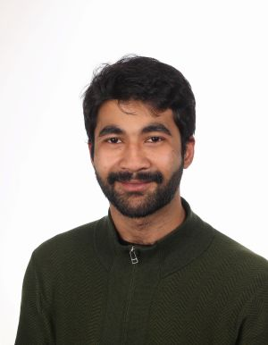

Somak Chatterjee
Contact
Projects
Summary
An enthusiastic and collaborative graduate of Computer Science. Currently based in Groningen, Netherlands and looking for opportunities for growth and learning through opportunities in software engineering and development. Looking for roles where I can learn from experienced developers and where I can draw from my own experiences and knowledge gained from my education and previous work experience.
Work Experience
Enfoldr
July 2025-Present
Full Stack Developer Intern (Hybrid)
Amsterdam, Netherlands
- Fullstack Development Internship for Enfoldr, a single view solution for managinglegal entities and their associated legal documents for businesses. Enfoldr is a webtool created using Sveltekit and Nodejs and written in Typescript
- Currently working on implementing a feature for language internationalization.
Keysight Technologies Riscure BV
May 2023-August 2023
Cybersecurity Intern (Remote)
Groningen, Netherlands
- Research internship on Code Protection in Android applications with afocus on code obfuscation.
- Developed documentation on code obfuscation patterns using QuartoDocsand designed a modular deobfuscator framework for detecting andremoving obfuscation patterns from Android Apps.
Belsimpel
November 2022-January 2023
Software Development Intern (On-site)
Groningen, Netherlands
- Internship for integrating the Akeneo Product Inventory Managementsystem with a web-application created with Laravel and React.js
- Responsible for migrating the Belsimpel database using Laravel, andaddition of new features such as Dockerizing application.
Jadavpur University
September 2018-April 2022
Software Developer(On-site)
Kolkata, India
- Worked as a developer for a project that implemented a Software-DefinedNetwork solution for the Defense Research and Development Organisation, India.
- Integrated the Openflow protocol on a bare metal switch and implementingfeatures such as a command-line interface program and monitoring metricsusing Python for switch status such as connectivity, power supply status,temperature and so on.
Education
Master of Science
2022-2025
- Computing Science | University of Groningen
- Track: Software Engineering and Distributed Systems
- Grade: 7.0
Bachelor of Technology
2013-2017
- Computer Science Engineering | West Bengal University of Technology
- Grade: 7.0
Skills